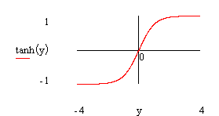
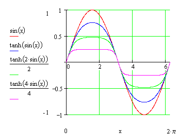
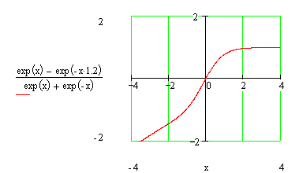
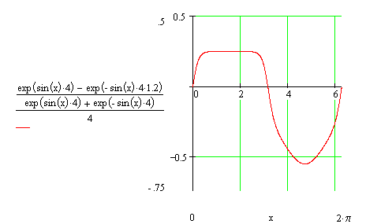
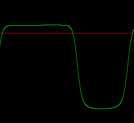

Hans Mikelson
Introduction
This article discusses using the hyperbolic tangent function to simulate guitar tube or valve amplifier distortion. Some of the characteristics that this instrument will try to mimic are clipping, rectification and asymmetry. Some modifications of the hyperbolic tangent function can be used to approximate this type of distortion.
Hyperbolic Tangent
A graph of hyperbolic tangent is presented below

Figure 1 Graph of hyperbolic tangent
This hyperbolic tangent is a nice starting point for the type of wave shaping required for distortion. Near zero the curve is approximately linear and at the extremes the curve begins to compress the signal. A graph of a sine wave and the wave shaped sine wave is presented next

Figure 2 Graph of sine wave and sine wave shaped by tanh with different amounts of distortion.
From figure 2 it can be seen that greater amplitude of the incoming signal results in greater clipping which is what is wanted for distortion. This accomplishes the first aspect of the distortion.
Modified Hyperbolic Tangent
Next I consider a modification of the tanh function which will allow asymmetric wave shaping. In order to do this consider how the tanh function can be created using the exponential function. Multiplying the numerator terms by values near 1 results in an asymmetric shape.

Figure 3 Graph of asymmetric modified tanh.
Shaping a sine wave with this modified tanh function results in the following curve

Figure 4 Graph of hsine wave and sine wave shaped by the modified tanh.
This completes the asymmetric portion of the wave shaping.
The final aspect considered in this instrument is rectification. The following Csound code fragment illustrates how this can be translated into Csound. Adding an offset to the signal prior to waveshaping can accomplish this. This results in a DC bias after wave shaping which must be removed. One way to do this is to compute an offset value to be subtracted from the processed signal.
koffs1 = irect*krms*(p4/1000+(p6-.5)/8000) koffs2 = -irect*krms*(p4/1000+(p7-.5)/8000) koffs3 = irect*krms*p4/1000 koffs = (exp(koffs1)-exp(koffs2))/(exp(koffs3)+exp(-koffs3)) ax1 = asig*(kpregn+ka1) ; Precalculate a few values to save time ax2 = -asig*(kpregn+ka2) ax3 = asig*kpregn aout = ((exp(ax1)-exp(ax2))/(exp(ax3)+exp(-ax3))-koffs)*kpostg ; modified tanh distortion
This works well but is computationally expensive. A graph of a sine wave processed using asymmetric waveshaping and rectification and the score line used to generate it follows.
; Sta Dur Overdrive Gain Shape1 Shape2 Rect InCh OutCh Output i11 0 .2 4 .5 0 .1 .5 1 2 1

Figure 5 Graph of sine wave with rectification.
Conclusion
This instrument is fairly flexible allowing asymmetric wave-shaping and rectification. One of the advantages of this instrument is the ability to adjust the amount and shape of the distortion continuously at k-rate which may not be easy to accomplish with table based wave-shaping. A disadvantage of this instrument is that it is computationally expensive and may not be as suitable for real-time operation especially if combined with other sound effects. This instrument does not attempt to generate band-limited distortion. Those interested in band-limited distortion should investigate the use of Chebyshev polynomials to generate the effect.
References